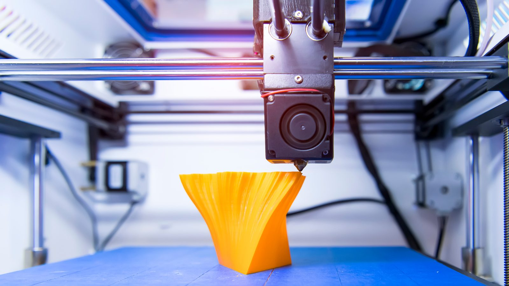
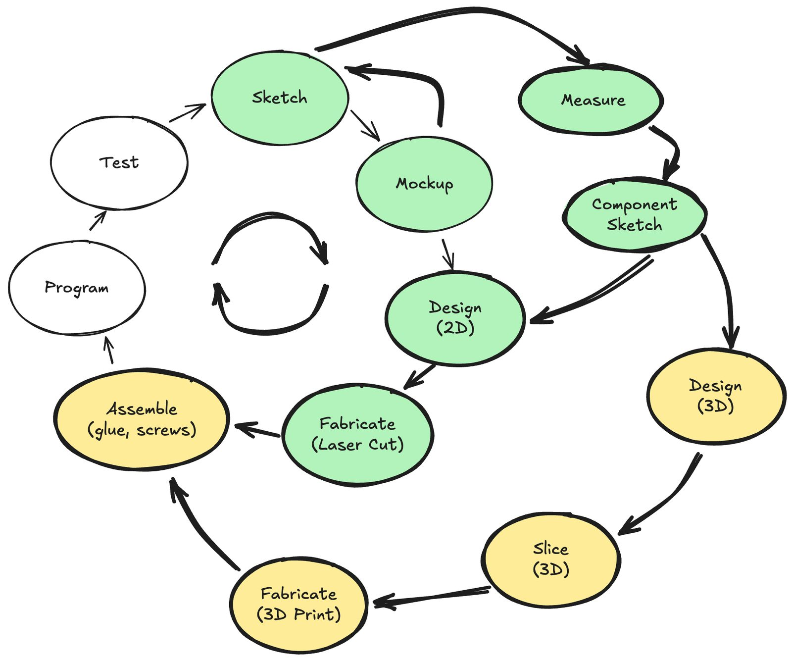
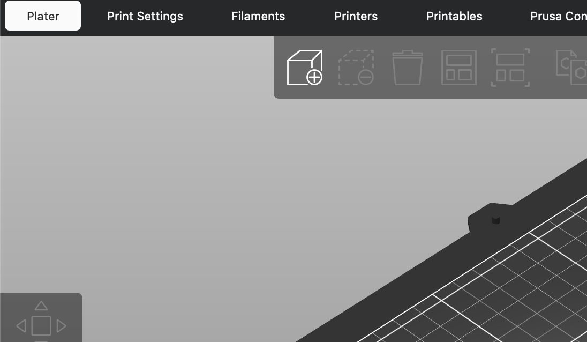

Laser-cut branch
Component sketch → 2D design → flat parts, cut and assembled.

Class 4 · Week 4 · Fall 2026
From model to machine part: design in Onshape, prepare in PrusaSlicer, and print the functional parts your robot needs.

Robo Challenge
The path from sketch to race — today we're on step three.
Model 3D parts — mounts, brackets, and custom components · 3D print functional parts for your robot and its dispenser.
Robo Challenge
Your robot — plus a supporting dispenser — moves as many balls as possible between two lines. The custom pieces come off the printer.


The making cycle
Sketch, mock up, design, fabricate, assemble, program, test — then loop back around.

Component sketch → 2D design → flat parts, cut and assembled.
Design (3D) → slice → fabricate: parts with height, curves, and internal detail.
Assemble, program, and test — then measure and feed the next iteration.
How it works
Four parts do the work — everything else supports them.
The plastic feedstock, spooled above the printer and fed into the hot end.
Melts the filament and lays it down, layer by layer — ours is 0.4 mm.
Move the toolhead and the bed along the axes while the part builds.
The build surface that the first layer sticks to.
Nozzle temperature
That's how hot the nozzle runs to melt filament. It is a burn risk — let the nozzle and heated bed cool before you reach in, and keep hands clear while a print is running.
Materials
PLA is the profile our printers run — but the material you pick changes how a part behaves.
Browse by property
Materials guides compare dozens of filaments side by side before you commit a spool.
Production process
Three tools, three steps — the same loop for every part you make this term.
Step 1 · Design
Onshape
Step 2 · Prepare
PrusaSlicer
Step 3 · Print
Prusa MK4
Onshape — onshape.com/en/education/sign-up with your Tufts account · PrusaSlicer — prusa3d.com/page/prusaslicer_424
Step 1 · Design
Build the part on screen from sketches and features, then export it as an STL for the slicer.
Start with a 2D profile and dimension it.
Extrude, boolean, fillet, and chamfer.
Export the finished part as an STL.
Step 2 · Prepare
Drop the STL into PrusaSlicer, then move, scale, rotate, place on face, and add support before you slice.


PrusaSlicer — prusa3d.com/page/prusaslicer_424
Step 3 · Print
The slicer tells you what the print will cost in time and filament before you commit — then save the G-code to a USB drive and print at Nolop.


Tips & tricks
Seven habits that keep the printers — and your prints — in one piece.
While you print
In your design
Individual assignment
5 points · due next week
The brief
3D print · 5 pt
Team assignment
A checkpoint that verifies your team has a physically assembled, structurally sound robot — and dispenser if applicable — with all electronics in place before you start writing software.
You don't need every component wired yet — but you should have a plan for routing the wires.
A solid frame, clean wiring, and a couple of known issues is exactly where you should be.
The goal is to find mechanical and integration problems while there is still time to fix them.
A “finished” robot held together with tape and optimism is not the goal — show us where you are and your clear-eyed plan for where you're going.
Mid-point assembly check
Demonstrate at Nolop
Submit in Canvas
Assembly criterion
Prioritize these — see the assignment for details.
See the assignment for the details behind each criterion.
Common pitfalls
Five shortcuts that cost teams time on race day.
It fails under stress. Use mechanical fasteners for load-bearing connections.
Masking tape releases mid-run. Use standoffs, screws, double-sided tape, or adhesive-backed Velcro.
A cable touching a spinning wheel will eventually get caught and ripped out.
If a sensor moves, its wires need strain relief and enough length to handle the motion.
If swapping a battery requires partial disassembly, you'll waste valuable testing time later.
Before you go
Then go make something. Next week: microcontrollers — we wire motors and sensors, program movement, and you bring your 3D print to class.
Where to find us
Office hours
go.tufts.edu/meet_tvdv
Email
thomas.van_de_velde@tufts.edu
Course materials
tuftsmaker.github.io/ENT-164